事实上我们可以讨论UFD及其分式域上的多项式，但下面我们仅限于讨论 和
和 上的多项式。由相关的高等代数学的知识，我们知道对于
上的多项式。由相关的高等代数学的知识，我们知道对于![$\mathbb{Z}[x]$](./latex/latex2png-PolyFacZ_27044286_-5.gif) 上的多项式
上的多项式 ，其在
，其在![$\mathbb{Q}[x]$](./latex/latex2png-PolyFacZ_27044295_-5.gif) 中的不可约因子分解可对应于在中的不可约因子分解，即若
中的不可约因子分解可对应于在中的不可约因子分解，即若![$$f=f_1f_2\cdots f_r(f_i\in\mathbb{Q}[x]),$$](./latex/latex2png-PolyFacZ_125876513_.gif) 则有
则有![$$f=f_1'f_2'\cdots f_r'(f_i'\in\mathbb{Z}[x]).$$](./latex/latex2png-PolyFacZ_231090265_.gif) 于是上任一多项式的因子分解对应于上的因子分解和上本原多项式的因子分解。前者在素数理论中讨论，这里我们只讨论后者。
于是上任一多项式的因子分解对应于上的因子分解和上本原多项式的因子分解。前者在素数理论中讨论，这里我们只讨论后者。
很自然的，由前面的最大公因子模方法我们可以想到用模方法来求解因子分解问题。首先我们可以利用上一章中的无平方因子分解的方法得到上的无平方因子本原多项式,这时，我们会遇到如下一些问题：
- 素数
 的选取要足够大，以使我们能从
的选取要足够大，以使我们能从 得到,这一点我们可由模公因子算法中介绍的Mignotte界理论得到。
得到,这一点我们可由模公因子算法中介绍的Mignotte界理论得到。 - 虽然已是无平方因子，但却不一定是无平方因子的。如多项式
 无平方因子，但
无平方因子，但 .那么在随机选取素数的时候如何使得也是无平方因子呢？这一点在结式理论和后文中回答.
.那么在随机选取素数的时候如何使得也是无平方因子呢？这一点在结式理论和后文中回答. - 当我们在
![$\mathbb{Z}_p[x]$](./latex/latex2png-PolyFacZ_71410771_-5.gif) 中将多项式分解后，如何将的分解对应到的分解。最简单的方法是尝试每一种可能的因子组合。因为若有不可约分解
中将多项式分解后，如何将的分解对应到的分解。最简单的方法是尝试每一种可能的因子组合。因为若有不可约分解 ,则
,则 ,但
,但 不一定不可约。当然，用这种尝试的方法有时效率很低，因此后面还要介绍一种格中短向量(short vectors in lattices)方法。
不一定不可约。当然，用这种尝试的方法有时效率很低，因此后面还要介绍一种格中短向量(short vectors in lattices)方法。
综上，我们首先要进入中求得因子分解，这一步我们可以利用“大素数”方法和“小素数”方法，只是这里的小素数不再是各不相同的素数，而是素数幂。第二步是由返回中，求得最终结果，可以用尝试因子组合的方法和格中短向量方法.
 大素数模方法和因子组合(Factor Combination)算法
大素数模方法和因子组合(Factor Combination)算法
 .
.
由推论1知， 是无平方因子的当且仅当
是无平方因子的当且仅当 .
.
 表示形式微商，则有
表示形式微商，则有 .
.
 是一个素数且
是一个素数且 ,则
,则 .
.
 ,再由上面引理知:
,再由上面引理知:

由于 ,则我们有下面的：
,则我们有下面的：
 .
.
假设有上本原多项式的分解 ,且在模下有：
,且在模下有： 其中
其中 为
为![$\field{p}[x]$](./latex/latex2png-PolyFacZ_223283783_-5.gif) 上首一不可约多项式.若
上首一不可约多项式.若 比Mignotte界
比Mignotte界 小,则有下面的等式：
小,则有下面的等式：![$$\frac{\mathrm{lc}(f)}{\mathrm{lc}(f_1)}f_1=\mathrm{lc}(f)\prod_{i\in S}g_i\in\mathrm{Z}[x],$$](./latex/latex2png-PolyFacZ_141666051_.gif) 该式原先在
该式原先在![$\mathrm{Z}_p[x]$](./latex/latex2png-PolyFacZ_88908883_-5.gif) 上就已成立了.其中指标集
上就已成立了.其中指标集 为
为 .
.
输入：无平方因子 次本原多项式
次本原多项式![$f\in\mathbb{Z}[x]$](./latex/latex2png-PolyFacZ_15161698_-5.gif) ，其中
，其中 且
且 ,
,
输出：在上的不可约因子 .
.
- 若
 则输出,否则
则输出,否则 ,
, - 随机任取一个奇素数
 ,直至
,直至![$\gcd(\overline{f},\overline{f}')=1\in\field{p}[x]$](./latex/latex2png-PolyFacZ_16859241_-5.gif) ,即满足上面推论条件,
,即满足上面推论条件, - 利用有限域上因子分解算法求出
![$g_1,\ldots,g_r\in\mathbb{Z}[x]$](./latex/latex2png-PolyFacZ_95129026_-5.gif) ,其无穷范数均比要小，且在
,其无穷范数均比要小，且在 上不可约，于是
上不可约，于是 ,
,  ,
, ,
, ,
, ,
,- 当
 时循环执行下面4步，否则转第10步,
时循环执行下面4步，否则转第10步, - 枚举
 的所有
的所有 元子集,并做下两步7、8循环：
元子集,并做下两步7、8循环： - 计算
 ,
,![$h^*\in\mathbb{Z}[x]$](./latex/latex2png-PolyFacZ_74668388_-5.gif) 使得其无穷范数比要小并且
使得其无穷范数比要小并且 ,
, ,
, - 若
 则
则 ,
, ,
, ,
, ,跳出6、7、8循环并转第5步,
,跳出6、7、8循环并转第5步,  ,
,- 输出
 .
.
 我们已经知道
我们已经知道 是无平方因子的。在第8步中，若条件真则有
是无平方因子的。在第8步中，若条件真则有 ，因为由
，因为由 和
和 知等式是成立的。记的因子
知等式是成立的。记的因子![$u\in\mathbb{Z}[x]$](./latex/latex2png-PolyFacZ_16144738_-5.gif) ,其在中不可约因子个数
,其在中不可约因子个数 .现在我们要归纳证明在每次到第5步时，有下面命题成立：
.现在我们要归纳证明在每次到第5步时，有下面命题成立：
 ,
, 中多项式均不可约,
中多项式均不可约, 本原且它的任何一个不可约因子
本原且它的任何一个不可约因子![$u\in\mathrm{Z}[x]$](./latex/latex2png-PolyFacZ_16213090_-5.gif) 有
有 .
.
初始时命题显然成立，假设命题在每次循环进行到第7步前均是成立的，此时经过第7步后当第8步的条件成立时，各量均要发生变化，根据前面的分析则有,于是 是
是 的因子。由于
的因子。由于 且对任何的不可约因子
且对任何的不可约因子 有,则是的不可约因子.当有一个不可约因子
有,则是的不可约因子.当有一个不可约因子 满足
满足 时，当循环到s时必然能将此因子选出，这一点可以构造来证明，即取指标集为在中不可约因子的编号.
时，当循环到s时必然能将此因子选出，这一点可以构造来证明，即取指标集为在中不可约因子的编号.
最后一步是证明在第5步时，若 ，则是不可约的.令
，则是不可约的.令![$g\in\mathbb{Z}[x]$](./latex/latex2png-PolyFacZ_15227234_-5.gif) 是的一个不可约因子且
是的一个不可约因子且 非平凡,于是
非平凡,于是 .但是
.但是 ，且
，且 ，则
，则 必为常数，必不可约.
□
必为常数，必不可约.
□
 在是本原的,且
在是本原的,且 ,
, ,于是无平方因子.此时
,于是无平方因子.此时 ,
, ,
, ,则
,则 ,取素数
,取素数 且
且 ,此时可以得到
,此时可以得到 上的分解：
上的分解：
首先,若取 ,则
,则


 同样的取
同样的取 时也可验证是不可以的。若取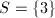,则
此时,则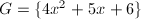,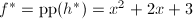,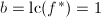,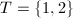,下一步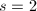,循环条件不满足，则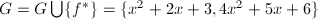.
时也可验证是不可以的。若取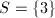,则
此时,则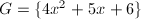,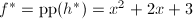,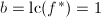,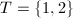,下一步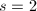,循环条件不满足，则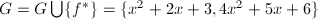.
对于一般的多项式,我们可以如下分解.当然,在算法第4步分解无平方因子多项式时,也可以调用后面几节将要介绍的分解算法.
输入：，1$" class="latex-inline" style="vertical-align: -4px" width="99" height="16">且,
输出：常数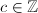和序对集 ,其中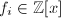均是不可约两两互素的多项式,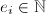,且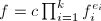.
,其中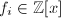均是不可约两两互素的多项式,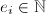,且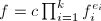.
 循环,调用上面算法
循环,调用上面算法 ,
, 和
和
Hensel提升(lifting)理论
以下我们全在整数环这个特殊的UFD中讨论,有些算法和命题在将换为其它的UFD,如也是正确的。
当我们已知一个分解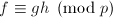(,互素)时，最简单的问题是获得分解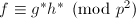,即将其“提升”。由于是素数，则存在,使得,如果我们取：则有
这样可以达到我们的要求。
 ,使得
,使得 且
且 .是首一的即可。对于第二条，由知必有中的多项式使得，于是必存在唯一的使得此时有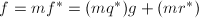,由唯一性得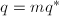,.
□
.是首一的即可。对于第二条，由知必有中的多项式使得，于是必存在唯一的使得此时有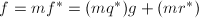,由唯一性得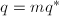,.
□
我们可以给出如下的单步Hensel提升(Hensel Step)算法.
由知 也是首一的,且 由
也是首一的,且 由 也可得到,于是.
也可得到,于是.
其次,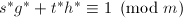, 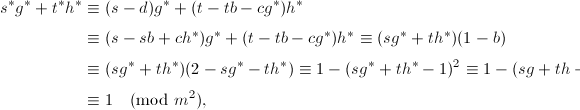 由可知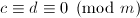,于是 而,于是,由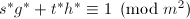知.所有结论证毕. □
既然本节开始提出的方法已经能够解决问题,为什么还要引入上面的算法呢？我们通过下面一个例子来说明问题：
 我们看到,\deg g$" class="latex-inline" style="vertical-align: -4px" width="102" height="16">,\deg h$" class="latex-inline" style="vertical-align: -4px" width="104" height="16">,这种规模的增大无疑对后续的提升造成更多的计算负担,并且次数的提高也不是我们想要的正确的因子分解的结果.因此我们用算法3来进行提升:
我们看到,\deg g$" class="latex-inline" style="vertical-align: -4px" width="102" height="16">,\deg h$" class="latex-inline" style="vertical-align: -4px" width="104" height="16">,这种规模的增大无疑对后续的提升造成更多的计算负担,并且次数的提高也不是我们想要的正确的因子分解的结果.因此我们用算法3来进行提升:
 任取为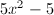,则对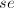进行的带余除法有： 于是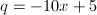,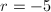,故
任取为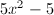,则对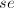进行的带余除法有： 于是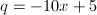,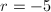,故 
正如Hensel单步提升算法所提到的,我们有,.
如果我们归纳地利用单步Hensel算法,依次对 ,,,
,,, 使用，则对任何正整数
使用，则对任何正整数 ，我们总可找到比其大的
，我们总可找到比其大的 的幂次，于是有下面的：
的幂次，于是有下面的：
 和不是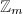中的零因子,将模的象以来记，则有 因此 于是,又和的领项和次数均相同,我们有,于是由整除性知,这与矛盾.
□
和不是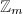中的零因子,将模的象以来记，则有 因此 于是,又和的领项和次数均相同,我们有,于是由整除性知,这与矛盾.
□
前面所说的均是二因子的Hensel提升,为了做多因子的情况，我们先给出如下定义：
中的多项式,以及正整数(例如我们可以取作素数),设有整数 使得,则模的因子树(factor tree of f modulo m)是指一个二叉树
使得,则模的因子树(factor tree of f modulo m)是指一个二叉树 :其根结点是;每个结点的两个子结点均是该结点在
:其根结点是;每个结点的两个子结点均是该结点在![$\mathbb{Z}_m[x]$](./latex/latex2png-PolyFacZ_197024685_-5.gif) 中的非平凡首一因子;叶结点均为的不可约因子.
中的非平凡首一因子;叶结点均为的不可约因子.
| 模5因子树 |
当然由模的因子树我们可以由单步Hensel算法得到模乃至更高次幂的因子树,只要我们由根结点依次一步步在每个结点做Hensel提升即可.下面给出该算法：
输入：整数和 次多项式,使得,正整数,一个模的因子树,共有
次多项式,使得,正整数,一个模的因子树,共有 个叶子.
个叶子.
输出：整数使得和一个模的因子树,各个新结点和原结点 满足.
满足.
- ,,
- 对
 从
从 循环到
循环到 ,执行3～5步,
,执行3～5步, - 计算整数
 使得,,将的根结点换为,
使得,,将的根结点换为, - 从根结点遍历的结点,对每个非叶结点,执行第5步（由根向叶结点方向进行）,
- 调用算法3,输入来提升和,提升到模,
- 输出,.
应用Hensel提升的Zasenhaus算法
有了前面的Hensel提升理论,下面我们就可以利用它取代前面的大素数模算法.
 ,直到
,直到 的引入见的因子,其在中不可约因子个数.现在我们要归纳证明在每次到第6步时，有下面命题成立：
的引入见的因子,其在中不可约因子个数.现在我们要归纳证明在每次到第6步时，有下面命题成立：
- ,
- 中多项式均不可约,
- 本原且它的任何一个不可约因子有.
主要证法和算法1的证明一致,我们只需证明当有一个不可约因子满足时，当循环到s时必然能将此因子选出，这一点可以构造来证明，即取指标集为在中不可约因子的编号.当然这里与前面的证法有所不同,因为并不是UFD,要证明唯一性还需要用Hensel提升的唯一性定理.首先可设,,再设,.由可知
另外
 以上两式均是的提升,于是且,再由所定的Mignotte界和
以上两式均是的提升,于是且,再由所定的Mignotte界和 的选择可知9中的条件必然成立.
□
的选择可知9中的条件必然成立.
□
,,,,,而,故取,此时,要提升3次.首先利用模 因子分解和扩展Euclid算法得到如下模5因子树：
因子分解和扩展Euclid算法得到如下模5因子树：
利用多因子提升算法提升为模25因子树：
以此类推有模 因子树：
模因子树：
于是我们有.这里我们再对其进行还原时，显然有时可得到不可约因子,此时.于是再一次得到分解.
因子树：
模因子树：
于是我们有.这里我们再对其进行还原时，显然有时可得到不可约因子,此时.于是再一次得到分解.
格中短向量(Short vectors in lattices)理论
问题的引入
通过大素数模方法或Hensel提升方法,我们都可以得到多项式在模某个整数后的分解,即.这时候我们用因子组合的算法将它们拼起来还原.但是这种方法的效率有时候不会很高,如Swinnerton-Dyer多项式(见[1]15.3节).于是我们要发展一套更有效的方法,下面几节将要介绍的格中短向量方法是一种多项式时间算法.
由定义13，以下我们取默认的范数为2-范数,即.我们将多项式的系数看作向量，则多项式范数等同于该向量的范数.
 ,,
,, .则,没有非平凡的公因子,则在中有
.则,没有非平凡的公因子,则在中有 ,由结式理论推论4可知存在,使得,由于在模下能整除和，则.但是非平凡首一多项式,于是必有,再由阿达马不等式有,此即说明
,由结式理论推论4可知存在,使得,由于在模下能整除和，则.但是非平凡首一多项式,于是必有,再由阿达马不等式有,此即说明 ,与矛盾.于是二者在中有非平凡公因子.
□
,与矛盾.于是二者在中有非平凡公因子.
□
由前面我们已得出的分解结果和上面的引理,我们可以设想这样一种分解的想法。首先我们已经有待分解的次多项式和在模下的一个因子,此时我们需要找到一个较“短”的 次多项式使得,且,于是可通过
次多项式使得,且,于是可通过 得到的一个非平凡因子.为了叙述方便,以后记号既可以表示次多项式,也可以表示
得到的一个非平凡因子.为了叙述方便,以后记号既可以表示次多项式,也可以表示 维系数向量.引入下面的定义：
维系数向量.引入下面的定义：
 称为格子(lattice)或由产生的
称为格子(lattice)或由产生的现在我们考虑寻找一个次数小于的多项式,设是由和生成的,即其中,这时我们有下面的定理：
 显然,对于
显然,对于 ,我们有,再由对首一多项式
,我们有,再由对首一多项式现在我们的问题化为在 中寻找一种约化的基,以使得基向量长度较短,满足要求.
中寻找一种约化的基,以使得基向量长度较短,满足要求.
约化基算法
下面要介绍的约化基算法即是所谓的3-L算法(Lenstra,Lenstra and Lovász).
的生成元均是的生成元 的线性组合,即存在整系数矩阵
的线性组合,即存在整系数矩阵 使得,于是
使得,于是 ,.
□
,.
□
若,则有-模的范数与生成元无关.由Hadamard不等式我们知道.
因为范数与基的选择无关,因而我们想到,如果选取的基越“正交”,那么某种程度上这组基矢的长度越短.因而,向量基的正交化可以启示我们得到一种求约化基（即所谓的短矢量）的方法.
现在我们已知由生成的-模,即一个维格子,若取内积为 ,由高等代数学(见[2]P281)的内容我们知道可以对它们进行Gram-Schmidt正交化,正交化的过程可以归纳地进行,即令,对于,有
于是存在一个上三角阵,其对角元为1,使得
其中张成同样的空间,且两两互相正交.由正交化的几何意义我们可以很明显地看到,每个向量的长度都不大于原向量的长度,即基向量的长度缩短了.但是光作GSO(Gram-Schmidt orthogonalization)是不行的,因为正交化后所得的向量并不一定是原先格子中的向量,这是模和线性空间的不同.但是首先，我们有下面的估计：
,由高等代数学(见[2]P281)的内容我们知道可以对它们进行Gram-Schmidt正交化,正交化的过程可以归纳地进行,即令,对于,有
于是存在一个上三角阵,其对角元为1,使得
其中张成同样的空间,且两两互相正交.由正交化的几何意义我们可以很明显地看到,每个向量的长度都不大于原向量的长度,即基向量的长度缩短了.但是光作GSO(Gram-Schmidt orthogonalization)是不行的,因为正交化后所得的向量并不一定是原先格子中的向量,这是模和线性空间的不同.但是首先，我们有下面的估计：
 ,存在
,存在 使得
使得
于是,其中,将此式代入可得： 证毕. □
既然我们用GSO得到的不一定是格的约化基,那么我们可以放宽条件,下面给出一种约化基的定义方式：
下面给出生成约化基的算法：
输入：线性无关的向量,
输出：由输入向量所生成的-模的约化基.
- 将初始化为,并进行相应的GSO过程,得到约化基
 和变换矩阵使得,
和变换矩阵使得, ,
, - 当时,执行下面3～5步,
- 让从
 循环到，执行下面4步,
循环到，执行下面4步, - (此处取最接近的整数),重新计算GSO得到,,
- 若1$" class="latex-inline" style="vertical-align: -1px" width="35" height="13">且2\|g_i^*\|^2$" class="latex-inline" style="vertical-align: -5px" width="122" height="19">则交换和,并重新计算GSO得到,,,否则
 ,
, - 输出.
我们取作为短矢量,有
如果我们再考虑由生成的-模,则按照算法可得如下约化基： 其中
此时得到短矢量.
约化基算法的一些细节说明
对于约化基算法6,它应该是一种说明性质的,实际使用它时有些效率上的不足.例如仔细分析一下我们会发现该算法第4步中的GSO更新是不必要的,可以将这一步省去.而且在每一步交换两个基向量时对GSO的更新也是有很多冗余计算的.当我们采用本节介绍的算法后,我们可以发现它甚至能比原算法效率提高一百倍.
事实上,关于格的约化基的定义方式在各文献中不一致,上节所提的定义方式是文献[1]给出的.A. K. Lenstra, H. W. Lenstra和L. Lovász的文献[3]中就给出了如下定义:
从定义中我们明显看出,本节定义的约化基一定是上一节定义的约化基,其条件更强,因此对后面的算法是没有影响的.下面我们给出新的约化基算法,它在细节处理比前节的算法要节省很多计算.
- 初始化工作.首先将各初化为,并且顺次由1循环到,做如下步骤2至4,
- ,
- 将顺次由1循环到,计算,,
- ,
- ,并循环做下面6-10步,
- 将顺次由
 递减到,做如下7-8步,
递减到,做如下7-8步, - 若1/2$" class="latex-inline" style="vertical-align: -5px" width="77" height="18">,则 对顺次计算,并且,
- 若则检验是否成立,若成立则交换
 与并更新此时的各GSO结果,并直接转第6步,
与并更新此时的各GSO结果,并直接转第6步, - 若
 则终止算法并输出,
则终止算法并输出,  .
.
算法的终止性见[3].
本算法仅在初始化时需要计算诸 ,在后面的算法中实际上已不需要它们,只要保存矩阵以及各的模
,在后面的算法中实际上已不需要它们,只要保存矩阵以及各的模 即可.在本节的开始,我们也提到了在交换两个基矢时对整个GSO的更新实际上包含了很多不必要的计算,因此本算法第8步所提的到的更新GSO步骤是很重要的,我们在下面给出:
即可.在本节的开始,我们也提到了在交换两个基矢时对整个GSO的更新实际上包含了很多不必要的计算,因此本算法第8步所提的到的更新GSO步骤是很重要的,我们在下面给出:
- ,,,,,
- 交换两个基矢,
- 对顺次交换,
- 对
 顺次计算
顺次计算
- 若2$" class="latex-inline" style="vertical-align: -1px" width="39" height="13">则.
关于更新算法的正确性,只需作一些计算即可证明,这里也不验证了,可以参考[3]P520.
应用格中短向量的分解算法
下面以Hensel提升和格中短向量方法为例来说明后者.这里我们先证明一个引理,便于后面算法正确性的证明.
 ,
, ,
, 无平方,则也无平方因子,.由Hensel引理知有,使得,且.于是推出.且.再由,在模下互素,我们由提升的唯一性知,.
□
无平方,则也无平方因子,.由Hensel引理知有,使得,且.于是推出.且.再由,在模下互素,我们由提升的唯一性知,.
□
输入：一个无平方因子本原次多项式,且,
输出：的不可约因子.
- 若则输出,否则,,,,
- 任选素数,,直至
 且,再令,
且,再令, - 在上得到分解,各因子无穷范数小于且首一,
- 利用Hensel提升得到分解,各因子不可约且无穷范数小于,首一,
- ,,,
- 当时,做下面7～10步,
- 在中选择次数最大的因子,,,对的循环做下面8、9步,
- 调用算法6计算一个短矢量,其中为
- 用试除法得到,其中,计算使得其无穷范数小于且满足,若则,,,,转第6步,
 ,,
,,- 输出.
中多项式均不可约.初始时显然满足,假设每次到第7步时均满足,令为的一个不可约因子且,则由本节开始的引理知.相反地,若是的因子且在模下能被整除，则.我们可以证明第9步中的条件成立当且仅当 ,又,我们知道只要则条件不满足.同样地，第10步能使得上述条件在算法循环结束时也是成立的,如果且是不可约的.
,又,我们知道只要则条件不满足.同样地，第10步能使得上述条件在算法循环结束时也是成立的,如果且是不可约的.
假设,令.则.于是.再由的选择,我们有 于是由引理3知非平凡,由不可约以及得.
令,则由Hensel提升唯一性知在第9步有.再由大于的Mignotte界bB,于是,且,算法会到到的不可约因子.
□

首先, ,则的生成元为很显然应该是一个短向量,由试除法得到,,显然满足条件,得到一个不可约因子,此时,.此时我们再取因子
,则的生成元为很显然应该是一个短向量,由试除法得到,,显然满足条件,得到一个不可约因子,此时,.此时我们再取因子  ,,只能取,则得到的生成元,由例4得到 是本原的且是,由试除法知,但此时已有B$" class="latex-inline" style="vertical-align: -5px" width="74" height="18">,故此时无解，循环结束，第二个不可约因子为此时的.
,,只能取,则得到的生成元,由例4得到 是本原的且是,由试除法知,但此时已有B$" class="latex-inline" style="vertical-align: -5px" width="74" height="18">,故此时无解，循环结束，第二个不可约因子为此时的.
其实我们第一步如果不取最大次数的,可以对短向量方法有更深的体会.若取,当时则由例4后面的讨论可知此时得到短向量.
参考文献
[1]Modern Computer Algebra, Cambridge University Press, 2002.
[2]高等代数学, 清华大学出版社, 北京, 2004.
[3]Factoring Polynomials with Rational Coefficients, Mathematicsche Annaln (1982), no.261, 515-534.